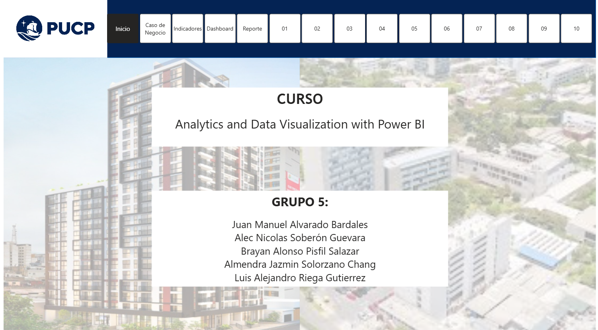
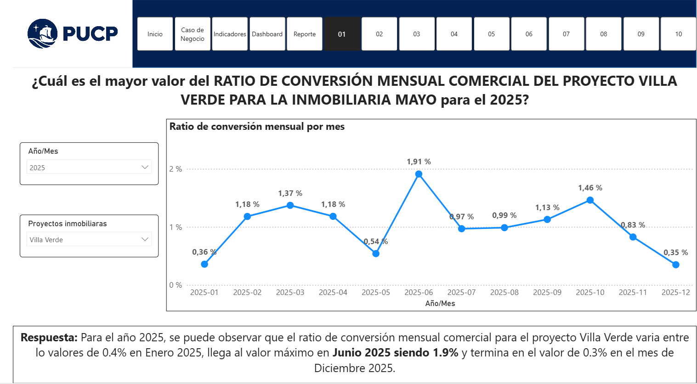
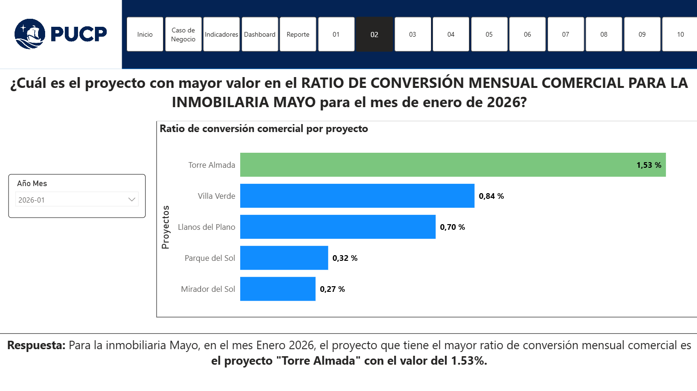
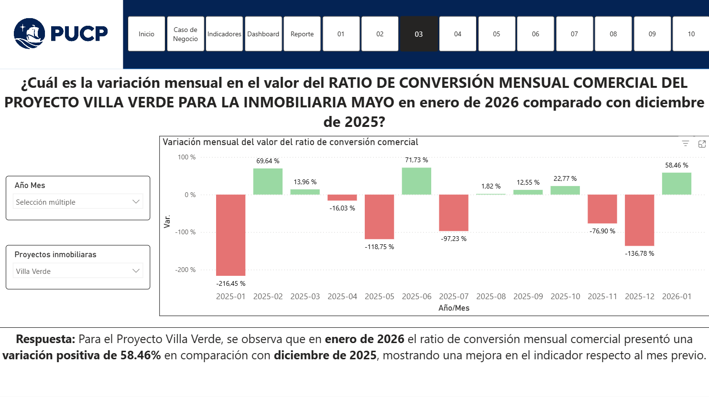
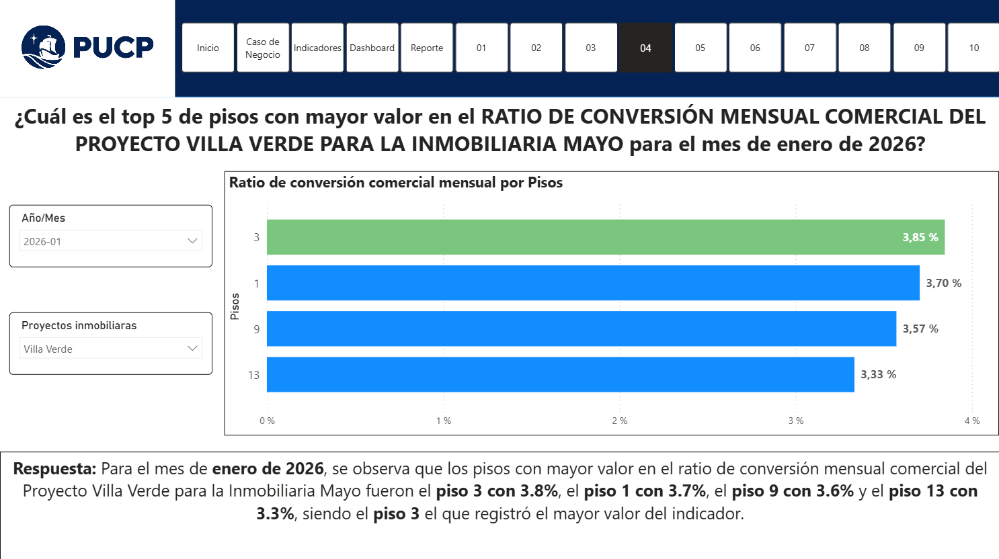
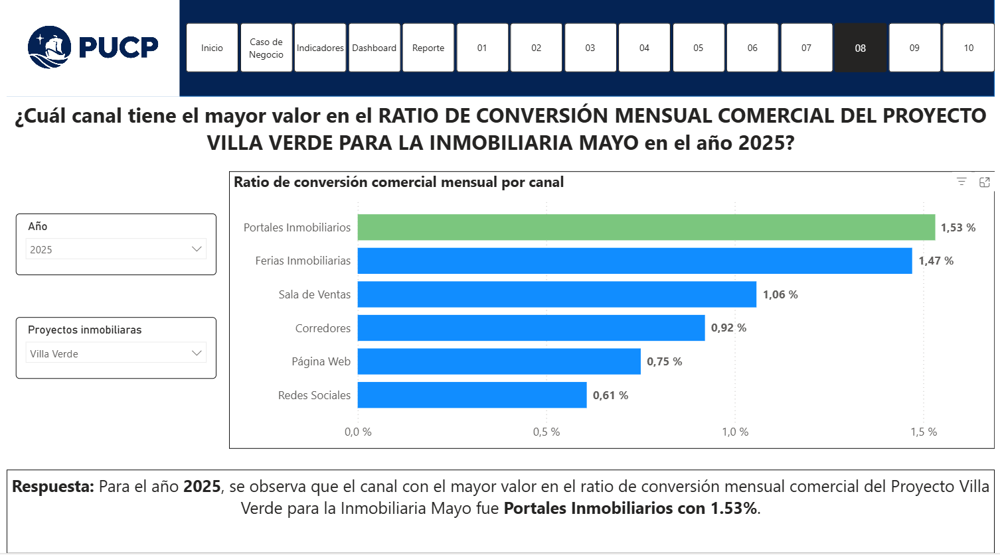
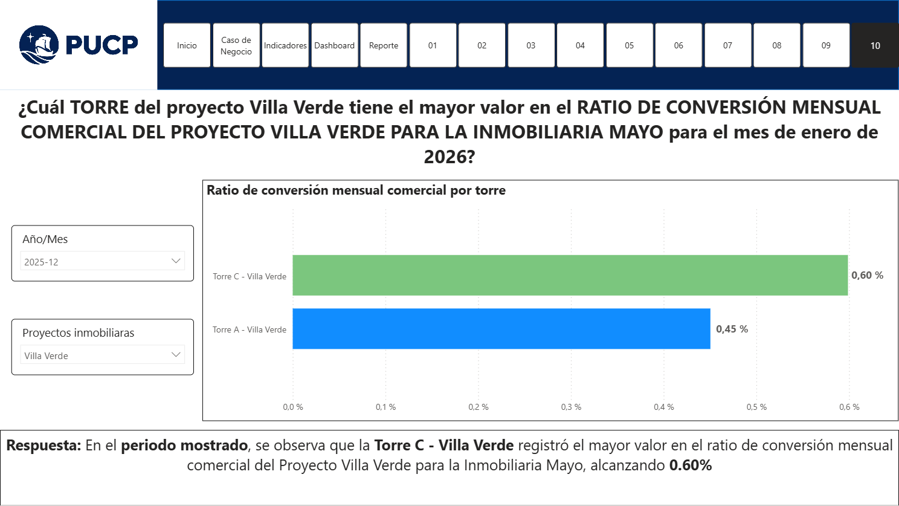

Presentación General
Este proyecto analizó el indicador mensual del ratio de conversión comercial del proyecto Villa Verde de la Inmobiliaria Mayo, entendido como el porcentaje de leads brutos que se convierten en minutas firmadas vigentes. El principal problema de negocio identificado fue un nivel de conversión de apenas 0.84% en enero de 2026, valor ubicado en el rango intermedio del semáforo del indicador y por debajo de la meta planteada de 1.84% para diciembre de 2026. Esta situación evidenciaba una brecha entre el volumen de prospectos captados y las ventas efectivamente cerradas, lo que sugiere fricciones en la segmentación, calificación y gestión comercial de los leads. Resolver este problema con herramientas de Business Analytics era fundamental porque permitía integrar la información comercial, monitorear el desempeño del indicador en el tiempo, identificar patrones de ineficiencia en el embudo de conversión y cuantificar su impacto económico. En un contexto donde la baja conversión incrementa el costo total de adquisición y afecta la rentabilidad del proyecto, el análisis de datos se volvió clave para transformar información dispersa en decisiones concretas orientadas a mejorar la efectividad comercial y proteger el valor del negocio.
El grupo desarrolló un dashboard comercial, un modelo de datos y un análisis costo-beneficio para sustentar decisiones orientadas a mejorar la conversión. A partir de ello, se plantearon recomendaciones enfocadas en reducir leads no calificados mediante mejor segmentación y precalificación, evidenciando un potencial ahorro económico relevante para el proyecto.
Objetivos del Proyecto
- Medir el desempeño mensual del ratio de conversión comercial del proyecto Villa Verde.
- Identificar brechas entre el nivel actual del indicador y la meta esperada.
- Cuantificar el beneficio económico de mejorar el indicador, comparando escenarios con y sin mejora.
- Desarrollar un dashboard que permita observar la evolución del KPI y apoyar en la toma de decisiones.
- Proponer acciones de mejora, como una mejor segmentación comercial y la precalificación de prospectos, para incrementar la conversión.
Dashboards y Visualizaciones
En esta sección se presentan las principales visualizaciones desarrolladas para analizar el comportamiento del ratio de conversión comercial del proyecto Villa Verde, así como los hallazgos más relevantes identificados a partir del dashboard en Power BI.
Dashboard principal












Figura: Principales dashboards del proyecto
Visuales destacadas
Interfaz de inicio del dashboard
Esta pantalla corresponde a la vista inicial del dashboard desarrollado en Power BI. Presenta la estructura general de navegación del proyecto, el contexto académico del curso y la identificación del grupo responsable del análisis.
- Introduce al usuario a la solución analítica antes de explorar los indicadores.
- Muestra la navegación principal hacia secciones como caso de negocio, indicadores, dashboard y reporte.
- Funciona como punto de entrada para comprender el alcance y organización del proyecto.
Figura: Pantalla de inicio e interfaz general del dashboard
Caso de negocio de la Inmobiliaria Mayo
Esta interfaz resume el objetivo del proyecto, la estrategia propuesta y el beneficio económico esperado.
- Objetivo: Elevar el ratio de conversión de 0.84% a 1.84% en un año.
- Estrategia: Segmentar mejor la captación, filtrar leads y enfocar la gestión comercial en prospectos más calificados.
- Costo-beneficio: Una inversión de US$ 600,000 genera un ahorro proyectado de US$ 4,061,000.
Figura: Objetivo, estrategia y costo-beneficio del proyecto
Definición del indicador
Esta vista define el indicador principal del proyecto:
- Ratio de conversión comercial (%) = (Minutas firmadas vigentes mensuales / Leads brutos mensuales) × 100.
- Se mide de forma mensual y en porcentaje.
- El indicador refleja qué proporción de leads del proyecto Villa Verde se convierte en ventas efectivas.
- Mejorar la conversión de 0.84% a 1.84% permitiría reducir el costo de adquisición de leads y generar un ahorro estimado de US$ 4,061,000.
Figura: Definición, fórmula e impacto económico del indicador
Dashboard principal del indicador
Aquí se visualiza el valor actual del ratio de conversión comercial mensual: 0.44% en enero de 2026, clasificado como nivel rojo.
- El gráfico velocímetro permite monitorear el desempeño del indicador de forma rápida y visual.
- Se incluye un filtro de fechas para realizar análisis históricos del KPI.
- La semaforización facilita detectar si la conversión se encuentra en nivel bajo, medio o alto.
Figura: Visual principal del dashboard
Reporte del indicador y meta proyectada
Esta visualización muestra la evolución del ratio de conversión comercial frente al objetivo de 1.84%:
- Línea azul: ratio de conversión actual en 0.84% al inicio del proyecto.
- Línea naranja: ratio de conversión proyectado, con ascenso progresivo hasta 1.84% en diciembre de 2026.
- Incluye hitos de implementación, seguimiento y un ahorro adicional estimado de US$ 4'061,000 como beneficio esperado al alcanzar la meta del indicador.
Figura: Evolución proyectada del indicador de conversión comercial
Análisis 1: Mejor valor mensual del ratio de conversión comercial
Este análisis responde a la pregunta: ¿Cuál fue el mejor valor del ratio de conversión mensual comercial en 2025?
- El valor máximo fue de 1.91% en junio de 2025.
- El valor mínimo fue de 0.35% en diciembre de 2025, evidenciando variabilidad durante el año.
- Este análisis es útil para la Jefatura Comercial, encargada de monitorear el desempeño del indicador por periodo.
Figura: Mejor valor mensual del ratio de conversión comercial
Análisis 2: Proyecto líder en conversión comercial
Esta vista responde a la pregunta: ¿Qué proyecto registró el mayor ratio de conversión comercial en enero de 2026?
- El proyecto con mejor desempeño fue Torre Almada, con 1.53%.
- La comparación entre proyectos facilita detectar brechas de desempeño comercial dentro de la inmobiliaria.
- Este análisis apoya la toma de decisiones de la Jefatura Comercial y del equipo de ventas.
Figura: Comparativo de conversión comercial por proyecto
Análisis 3: Cambio mensual del indicador
Esta vista responde a la pregunta: ¿Cómo varió el ratio de conversión comercial en enero de 2026 respecto a diciembre de 2025?
- El ratio mostró una mejora de 58.46% en enero de 2026.
- La visual permite identificar meses con variaciones positivas y negativas del indicador.
- Este análisis apoya a la Jefatura Comercial en el seguimiento del comportamiento mensual del KPI.
Figura: Variación mensual del ratio de conversión comercial
Análisis 4: Pisos con mayor ratio de conversión comercial
Esta vista analiza: ¿Cuáles fueron los pisos con mayor valor en el ratio de conversión mensual comercial del proyecto Villa Verde para la Inmobiliaria Mayo en enero de 2026?
- El gráfico muestra que el piso 3 lidera con un ratio de conversión de 3.85%.
- Le siguen el piso 1 con 3.70%, el piso 9 con 3.57% y el piso 13 con 3.33%.
- Este análisis permite identificar qué pisos presentan un mejor desempeño comercial dentro del proyecto.
- La información es útil para la Jefatura Comercial y el equipo de ventas, ya que ayuda a priorizar estrategias sobre las unidades con mayor potencial de conversión.
Figura: Pisos con mayor ratio de conversión comercial en enero de 2026
Análisis 5: Costo de adquisición de leads y nivel de conversión
Esta vista analiza: ¿Cómo se comportó el costo de adquisición de leads en los meses de 2025 en los que la conversión comercial fue menor a 1.84%?
- La visual relaciona el costo de leads con el ratio de conversión comercial mensual.
- El costo más alto se observó en noviembre de 2025 (US$ 3,420), mientras que el más bajo fue en enero de 2025 (US$ 2,536).
- Este análisis ayuda a identificar periodos donde la inversión comercial no se traduce en una conversión óptima.
Figura: Relación entre costo de adquisición y conversión comercial
Análisis 6: Tiempo promedio entre lead y venta
Esta vista analiza: ¿Cómo varió el tiempo promedio mensual entre el inicio del lead y la venta durante el 2025?
- El promedio general del periodo fue de 13.57 días.
- El mayor tiempo se observó en enero de 2025 (21.50 días) y el menor en mayo de 2025 (6.00 días).
- Este análisis ayuda a evaluar la eficiencia del proceso comercial y la velocidad de conversión de leads.
Figura: Evolución mensual del tiempo promedio de conversión
Análisis 7: Ranking de vendedores por conversión promedio
Esta vista analiza: ¿Qué vendedor tuvo el mayor promedio mensual de conversión comercial durante 2025?
- José Antonio Herrera obtuvo el mejor resultado con 1.78%.
- La comparación entre vendedores permite identificar diferencias de desempeño comercial.
- Este análisis es clave para la Jefatura Comercial y el equipo de ventas.
Figura: Ranking de vendedores por ratio de conversión promedio
Análisis 8: Canal líder en conversión comercial
Esta vista analiza: ¿Qué canal registró el mayor ratio de conversión comercial durante el 2025?
- El canal con mejor resultado fue Portales Inmobiliarios, con 1.53%.
- La comparación entre canales permite identificar cuáles aportan mayor efectividad comercial.
- Este análisis es clave para la Jefatura Comercial y el equipo de marketing.
Figura: Ranking de canales por ratio de conversión comercial
Análisis 9: Unidad líder en conversión comercial
Esta vista analiza: ¿Qué tipo de unidad registró el mayor ratio de conversión comercial en diciembre de 2025?
- La unidad con mejor resultado fue Flat 2D 2B, con 0.84%.
- La comparación entre tipologías permite identificar cuál presenta mejor desempeño comercial.
- Este análisis es clave para la Jefatura Comercial.
Figura: Comparativo por tipo de unidad
Análisis 10: Torre líder en conversión comercial
Esta vista analiza: ¿Qué torre presentó el mayor ratio de conversión comercial en el periodo mostrado?
- Torre C - Villa Verde lideró con 0.60%.
- Torre A - Villa Verde registró 0.45%.
- La comparación entre torres ayuda a identificar diferencias de desempeño dentro del proyecto.
- Este análisis es clave para la Jefatura Comercial.
Figura: Comparativo del ratio de conversión comercial por torre
Equipo del Proyecto
Juan Manuel Alvarado Bardales
Participación: 20%
Alec Nicolas Soberon Guevara
Participación: 20%
Brayan Alonso Pisfil Salazar
Participación: 20%
Almendra Jazmin Solorzano Chang
Participación: 20%
Luis Alejandro Riega Gutierrez
Participación: 20%
Repositorio y Publicación
Reporte en Power BI Web - Activo hasta el 01 de Abril: Ver reporte en Power BI
GitHub Pages: Visitar página web del proyecto